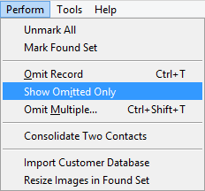
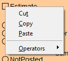
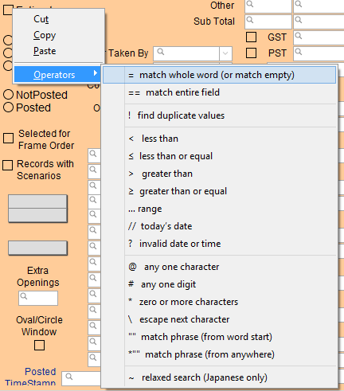

Find Empty Fields
Perform a search for an empty checkbox or radio button.
-
Use to find Contacts with a last name, email address, etc.
-
Use to find if any Work Orders are neither hold, complete or incomplete.
How to Find an Empty Field
-
In any Find screen, enter an equal sign = in the field you wish to find empty.
-
Click the Perform Find button.
-
The search results appear. Since we added nothing after the equal sign, FileMaker Pro searches for records with an empty field.
How to Find Empty Fields in a Portal
(Or How to Find Empty Phone Number Fields)
Performing a search using "=" will show existing phone records with an empty phone number but it will not display Contacts that have no phone record. A work-around is provided here.
-
In the Contact's Find screen, enter an asterick sign * in the Phone field.
An asterick is used as a "wildcard character to find all records based on search criteria plus wildcard" See: Refining find requests in FileMaker Pro using find operators. -
Click the Perform Find button.
-
In the list view of search results, in the menubar, click Perform and choose Show Omitted Only.

-
The search results, Contacts without a phone number, appear.
To display Contacts with no phone number at all, we have to search with * in the Phone number field to first show all Contacts with a phone number, and then show the omitted results so we can see all the Contact records that do not have a phone number.
How to Find an Empty Checkbox or Radio Button
-
In any Find screen, right-click the checkbox or radio button.

-
Click Operators and choose the = (equal sign).

-
Even though nothing appears to have changed, click the Perform Find button.
-
The search results appear.
© 2023 Adatasol, Inc.